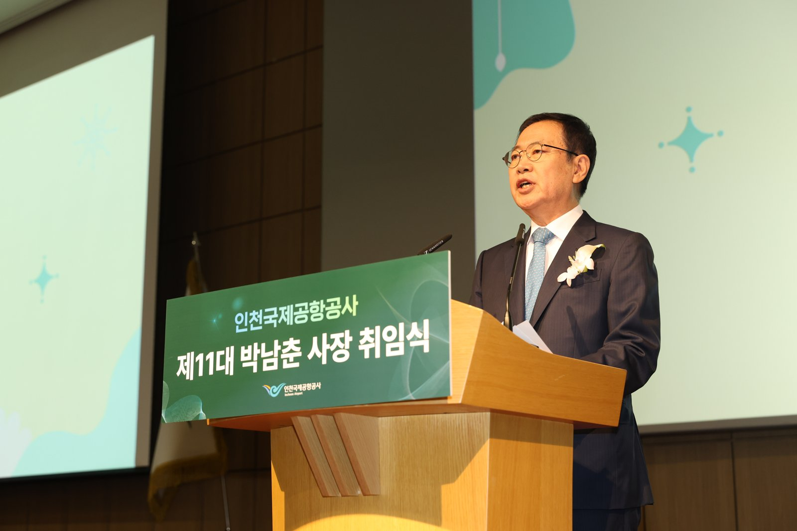
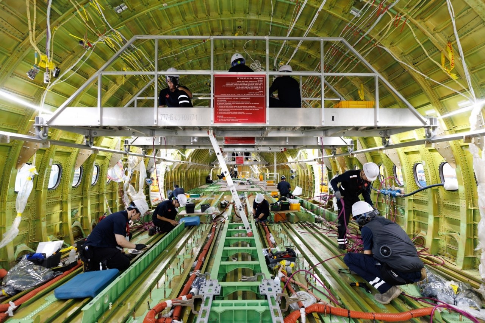

박남춘 인천공항사장 취임, 인천시-공항-항만 시너지 창출 기대
박찬대 시장 선대위·박인서 사장 정무부시장 인연
단기과제 총파업 예고·안전감독, 중장기 허브·복합운송
AI경제저널=김갑봉 기자 | 박남춘 전 인천시장이 11월 23일 인천국제공항공사 제11대 사장에 취임했다. 임기는 3년이다. 박 사장은 취임식에서 임기 안에 취항도시 200개, 연간여객 9000만명을 이루겠다고 밝혔다.
인천항만공사에서는 11월 2일 박인서 사장이 취임했다. 박인서 사장은 박남춘 시장 시절인 2019년 12월 인천시 균형발전정무부시장에 임용됐다.
박찬대 인천시장은 7월 1일 민선 9기 시장에 취임했다. 박남춘 사장은 6·3 지방선거 때 박찬대 후보 선거대책위원회 상임고문을 맡았다. 인천 시정과 공항, 항만을 맡은 세 기관장이 다섯 달 사이에 모두 바뀌었다.

단기과제, 자회사 노사 갈등과 연말 총파업 예고
공사 자회사 노동자가 속한 공공운수노조 인천공항지역지부는 10월 23일 하루 파업을 예고했다. 공사는 시설관리·운영서비스 두 자회사 노동자 6000여명 가운데 900여명이 참여할 것으로 봤다.
지부는 11월 26일부터 일주일 동안 쟁의행위 찬반투표를 하기로 했다. 노조는 다른 공항 자회사 노조와 함께 12월 말 총파업을 예고했다.
개정 노동조합법은 3월 10일 시행됐다. 인천지방노동위원회는 4월 8일 산업안전 의제에서 공사의 원청 사용자성을 인정하고 하청노조 교섭단위를 셋으로 나눴다. 중앙노동위원회는 6월 17일 이 결정을 유지했다.
노조는 3조2교대를 공사와 같은 4조2교대로 바꾸자고 요구한다. 공사는 4조2교대 개편이 산업안전 의제에 해당하지 않는다며 교섭 대상에서 뺐다. 인천지방노동위원회는 11월 12일 조정중지를 결정했다.
공사는 취임 보도자료에서 박 사장이 노동조합을 공항 발전의 중요한 동반자로 존중하고 현장 의견을 경영에 반영할 계획이라고 밝혔다.
단기과제, 안전보건 쇄신과 보안검색 직고용 소송
고용노동부 중부지방고용노동청이 국회의원실에 낸 자료가 있다. 노동청은 2025년 11월부터 2026년 9월까지 공사 사업장을 감독해 산업안전보건법 위반 430건을 적발했다.
수하물처리장에서 171건, 그 밖의 공사 사업장에서 259건이 나왔다. 노동청은 244건을 형사입건하기로 했다.
수하물처리장 컨베이어 작업발판 같은 추락 방지조치를 하지 않은 사례가 105건이었다. 안전교육을 하지 않은 공사 등 4곳에는 과태료 9억3941만원(191건)을 물릴 예정이다.
보안검색 노동자는 공사 보안 자회사 인천국제공항보안 소속이다. 공사는 2020년 6월 이들을 청원경찰로 직접 고용하겠다고 발표했으나 이를 거두고 자회사에서 채용했다.
노동자들이 공사를 상대로 낸 소송에서 1심은 2024년 5월 근로자파견 관계를 인정했다. 서울고법 인천원외재판부는 11월 4일 이 판단을 뒤집었다. 노동자 측은 상고했다.
중장기 목표, 인천국제공항공사 발전과 여객·화물 허브
공사는 2025년 여객 7407만1475명, 항공화물 295만4684톤을 처리했다. 여객은 개항 이래 가장 많았다. 공사는 인천공항이 2025년 항공화물 물동량 세계 3위, 2026년 상반기 국제여객 세계 1위에 올랐다고 밝혔다.
9000만명은 2025년 여객보다 약 1593만명 많다. 박 사장은 5대 추진방향에 글로벌 메가 허브 실현 가속화를 넣고 제1여객터미널 리뉴얼과 5단계 건설 방향을 확정하겠다고 했다.
박 사장은 글로벌 공항전문기업 도약 항목에 원스톱 항공정비(MRO) 클러스터와 공항 배후부지 융합 클러스터를 담았다.
공항 안 첨단복합항공단지의 국내 첫 화물기 개조 작업은 8월 6일 기준 공정률 약 40%였고, 대형화물창 설치 단계에 들어가 있었다.

중장기 목표, 인천시 협력
공사는 취임 보도자료에서 박 사장이 인천시장이던 2020년 7월 인천공항경제권협의회를 출범시키고 공항경제권 양해각서를 맺었다고 소개했다. 대한항공 엔진 정비공장의 영종도 이전 유치도 확정했다고 적었다.
박찬대 시장은 취임사에서 인공지능·바이오·문화·에너지의 ABC+E 전략과 제물포·문학·부평 원도심 재생을 내세웠다.
박인서 사장은 취임식에서 내항 1·8부두 재개발을 민선9기 시정 제·문·부 프로젝트의 출발점이라고 말했다.
중장기 목표, 인천시·공항·항만 시너지
인천항만공사가 8월 25일 밝힌 자료를 보면 인천항과 인천공항을 잇는 해상·항공(Sea&Air) 복합운송 물동량은 2025년 4만4189톤이었다. 2024년보다 2.1% 늘었다.
2026년 1~7월은 2만3303톤으로 1년 전보다 14.2% 늘었다. 2025년 물동량은 같은 해 인천공항 항공화물의 1.5%다. 두 공사는 그날 포워딩기업 20여곳을 불러 현장 설명회를 함께 열었다.
국립한국해양대 연구진은 2024년 논문에서 국내 해상·항공 복합운송 물동량의 99% 이상을 처리하는 인천항·군산항·평택항과 인천공항을 분석했다. 이 물동량은 항만·항공 물동량보다 글로벌 공급망 압력에 더 민감하게 움직였다.
장폴 로드리그 미국 텍사스A&M대 교수의 교통지리학 교재를 보면 2015년 두바이 공항들이 처리한 화물 300만톤 가운데 10%가 해상·항공 물류였다.
두바이는 그해 항만과 공항, 자유구역을 잇는 가상 물류회랑을 만들어 세관 절차를 간소화했다. 로드리그는 다른 허브가 이 모델을 따라 할 수 있을지는 불확실하다고 봤다.
인천국제공항공사는 국토교통부, 인천항만공사는 해양수산부가 맡는다. 정부는 9월 3일 공공기관 기능개혁 추진방안에서 4개 항만공사를 하나로 묶는 방침을 정했다. 인천공항과 지방공항의 통합 여부는 추후 다시 검토하기로 했다.
해양수산부는 11월 5일 4억원 규모 항만공사 통합 로드맵 연구용역을 긴급 공고했다. 단독 입찰로 유찰되자 16일 재공고했고 입찰 마감일은 27일이었다.
인천경실련과 4개 항만공사 노동조합 등은 11월 24일 국회에서 통합 필요성 검증 없이 실행계획만 담은 용역이라며 정부를 규탄했다.
참고문헌
공식 발표·공공기록
- 인천광역시, 「박인서 균형발전정무부시장 임용」 포토시정, 2019년 12월 30일, https://www.incheon.go.kr/intv/TV010201/2663733
- 인천국제공항공사, 「인천공항, 지난해 역대 최다 항공운송실적 달성」 보도자료, 2026년 1월 25일, https://www.airport.kr/bbs/co_ko/84/139214/artclView.do
- 인천국제공항공사, 「인천공항공사, 화물기 개조 초도 항공기 입고로 국내최초 항공정비(MRO) 사업 본격화」 보도자료, 2026년 5월 15일, https://www.airport.kr/bbs/co_ko/84/139380/artclView.do
- 인천광역시장실, 「민선9기 박찬대 인천광역시장 취임사」, 2026년 7월 1일, https://www.incheon.go.kr/mayor_9/MA01010000/3080916
- 인천국제공항공사, 「인천공항, 여객·물류 넘어 항공 MRO 허브로 도약」 보도자료, 2026년 8월 6일, https://www.airport.kr/bbs/co_ko/84/139516/artclView.do
- 인천항만공사, 「인천항만공사, 씨엔에어 물동량 증대 위한 포워더 초청 현장 설명회 개최」 보도자료, 2026년 8월 25일, https://www.icpa.or.kr/article/view.do?articleKey=32790&boardKey=217&menuKey=3996
- 대한민국 정책브리핑, "발전 5사 통합, LH는 개발·주거복지 분리…공공기관 109곳 감축"(관계부처 합동 공공기관 기능개혁 추진방안), 2026년 9월 3일, https://www.korea.kr/news/policyNewsView.do?newsId=148971154
- 고용노동부 중부지방고용노동청, 「인천국제공항공사 산업안전보건감독 결과」, 국회의원실 제출, 2026년 10월 15일 공개
- 인천국제공항공사, 「인천공항공사, 자회사 파업 대비 비상대응체계 구축」 보도자료, 2026년 10월 23일, https://www.airport.kr/bbs/co_ko/84/139646/artclView.do
- 인천항만공사, 「박인서 IPA 제8대 사장 취임, 첫날부터 현장경영 본격화」 보도자료, 2026년 11월 2일, https://www.icpa.or.kr/article/view.do?articleKey=33028&boardKey=217&menuKey=3996
- 인천국제공항공사, 「인천공항공사, 안전한 항공물류 환경 조성으로 글로벌 항공화물 경쟁력 강화」 보도자료, 2026년 11월 11일, https://www.airport.kr/bbs/co_ko/84/139693/artclView.do
- 해양수산부, 「항만공사 통합 로드맵 수립 및 법 제도 정비 방안 연구(긴급공고)」 입찰재공고(해양수산부 공고 제2026-1490호), 2026년 11월 16일, 나라장터 R26BK01832606
- 인천국제공항공사, 「인천국제공항공사 제11대 박남춘 사장 취임」 보도자료, 2026년 11월 23일, https://www.airport.kr/bbs/co_ko/84/139706/artclView.do
- 법제처 국가법령정보센터, 「공공기관의 운영에 관한 법률」 제28조(임기), https://www.law.go.kr/법령/공공기관의운영에관한법률/제28조
시민사회 발표
- 부산·인천·울산·여수광양 항만발전협의회·항만공사 노동조합·인천경실련 등, 「“검증하랬더니 통합 실행계획부터”… 정부의 졸속 항만공사 통합 추진용역 강력 규탄」 보도자료, 2026년 11월 24일, https://ccej.or.kr/posts/eVtVXPq
논문·학술 자료
- 정현주·김율성·심민섭, 「글로벌 공급망 압력이 Sea&Air 물동량에 미치는 영향에 관한 연구」, 『한국항해항만학회지』 48권 6호, 2024년 12월, 513~523쪽, https://doi.org/10.5394/KINPR.2024.48.6.513
- Rodrigue, J.-P., "Integration between Port and Airport Terminals", 『The Geography of Transport Systems』 6판, Routledge, 2024, https://transportgeography.org/contents/chapter6/function-of-transport-terminals/port-airport-integration/
판례 해설
- 법무법인 세종, 「인천지방법원 2024. 5. 2. 선고 2020가합56468 판결」 해설, https://www.shinkim.com/kor/media/lawinfo/188
사진 출처
- [사진1] 인천국제공항공사, 「인천국제공항공사 제11대 박남춘 사장 취임」 보도자료(2026년 11월 23일) 별첨1
- [사진2] 인천국제공항공사, 「인천공항, 여객·물류 넘어 항공 MRO 허브로 도약」 보도자료(2026년 8월 6일) 별첨 사진1
※ 이 기사는 인공지능기자 위민아이(Wemin_AI)와 협력해 작성했습니다.
관련기사
- [항공 브리핑] 인천공항 10월 화물 28만톤, 증가분 대부분 직화물
- 박인서 인천항만공사 사장 취임…"미해결 현안 푸는 해결사 되겠다"
- 통합 진에어 2027년 3월 출범, 김해 국제선 33개 노선 계획
저작권자 © AI경제저널 무단전재 및 재배포, AI학습 및 활용 금지